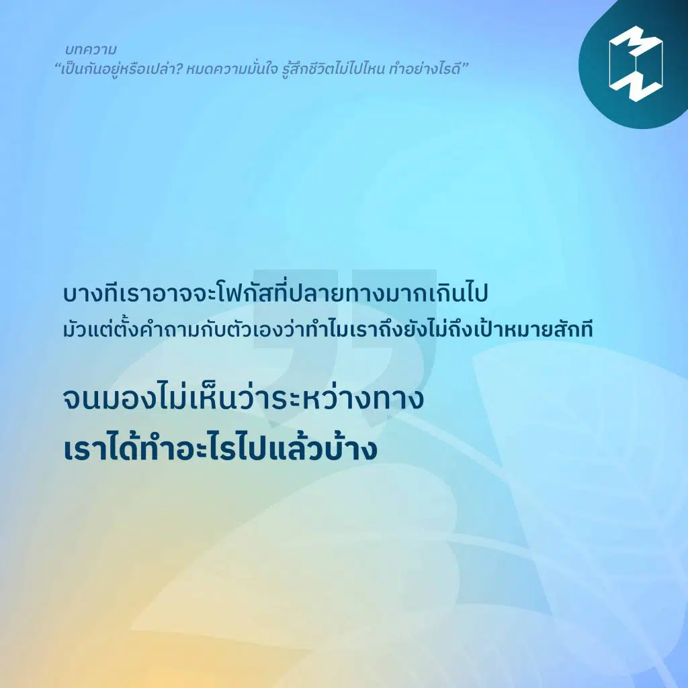

My Blog
ชื่อบทความ

เนื้อหาบทความ
รู้สึกเหมือนเดินอยู่กับที่ทำไมไม่ก้าวหน้าเหมือนอย่างคนอื่นบ้าง?
การที่เรารู้สึกเช่นนี้ไม่ใช่เรื่องแปลก
เราทุกคนคงมีช่วงเวลาที่เรารู้สึกว่าติดอยู่ที่เดิมไม่ไปไหน
ในขณะที่คนอื่นเดินนำเราไปแล้วจริงๆ
ช่วงเวลาที่เราจะรู้สึกเช่นนี้มักจะเป็นเวลาสั้นๆเท่านั้น
แต่ถ้าใครจมกับความรู้สึกแบบนี้มานานแล้ว
ลองปรับความคิดและการกระทำของคุณตาม 6 วิธีนี้กันเลย
อ่านต่อ
ชื่อบทความ

เนื้อหาบทความ
“รักที่มอบให้ตัวเองก็เป็นรักที่ต้อง ‘ฝึกฝน’ เพราะในหลายๆ ครั้ง เราอาจต้องทำในสิ่งที่ไม่เคยทำมาก่อน อย่าง การเรียนรู้ที่จะมีความสุขด้วยตัวเองในวันที่ไม่มีใคร”
‘รักตัวเอง’ ทักษะสำคัญในการใช้ชีวิตและหนึ่งในทักษะที่ส่งผลอย่างมากต่อความสำเร็จด้านต่างๆ แต่ในขณะเดียวกัน ทักษะนี้เป็นสิ่งที่เราต้องเรียนรู้เองและไม่มีสอนในโรงเรียน!
ความรักที่ให้ตัวเองหน้าตาเป็นแบบไหน แล้วเราจะเริ่มรักตัวเองได้อย่างไร
อ่านต่อ